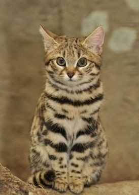

=========================================
삵은 식육목에 속하며 고양이처럼 생겼으나
고양이보다 몸집이 크고 불분명한 반점이 많다.
입을 크게 벌릴 수 있고 머리는 둥글며, 턱의 근육이 발달하여
먹이나 다른 물건을 물어뜯는 힘이 매우 세다.
꼬리에는 고리모양의 가로띠가 있으며
눈 위 코로부터 이마 양쪽에 흰 무늬가 뚜렷하게 나타난다.
더 자세한 정보는 하단 링크 참조
=========================================
